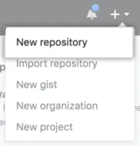
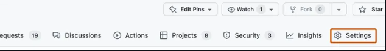
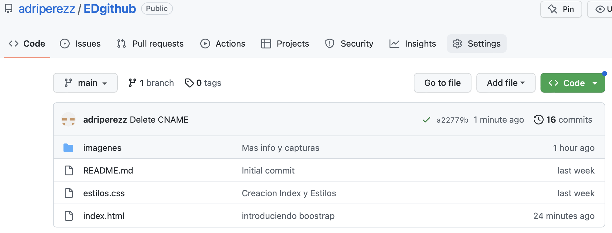
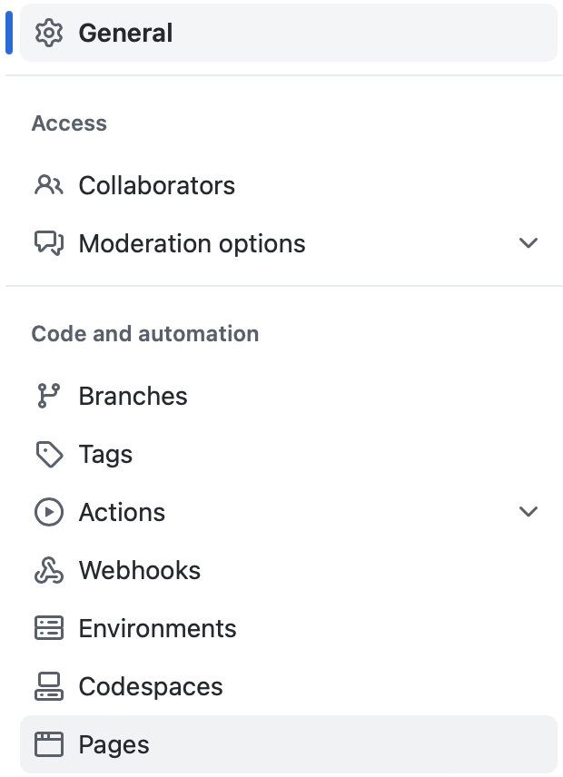
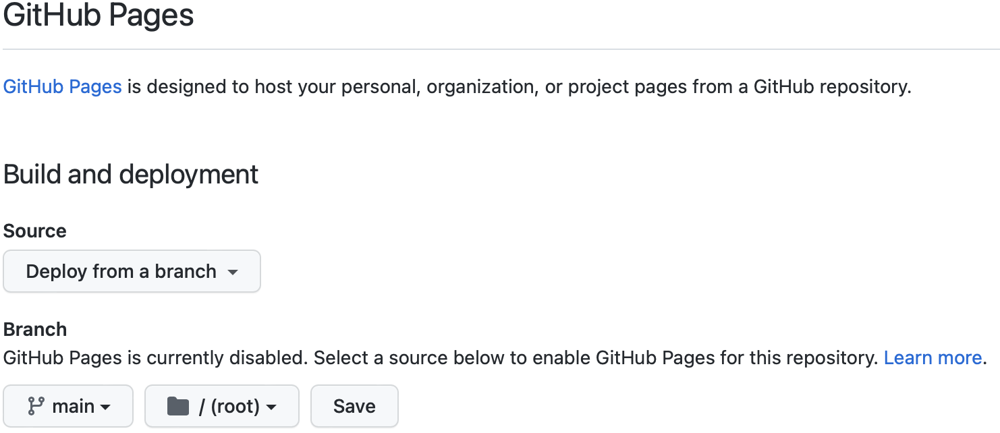

Creacion de un nuevo repositorio
Paso 1
Seleciona en el menu de arriba a la derecha, crear nuevo repositorio.
Paso 2
Debe elegir un nombre y opcionalmente una descripción, despues de esto debe elegir la visibilidad que tendra este repositorio (publico,privado)
Paso 3
Selecciona la opcion para crear un README con el repositorio para que asi te sea mas facil clonar el repositorio en tu ordenador y de esta forma le das a crear.

Compartir un repositorio con tu grupo
Paso 1
En el repositorio que queramos compartir debemos ir a settings situado a la derecha de todas la funciones que podemos realizar.
Paso 2
Debe elegir la opcion invitar a un colaborador, desde hay temdras que escribir el nombre del colaborador que quieres invitar y debes darle a añadir nombre al repositorio.
Paso 3
El usuario recibirá un correo electronico sobre la invitación, este debe aceptarla y ya podeis trabajar juntos.
Creacion de la pagina
Paso 1
Dentro del repositorio añade un index.html y un css.
Paso 2
Desde aqui dale una estructura con la informacion que quieres reflejar y dale un estilo con la hoja CSS
Publicacion pagina web en GitHub Pages
Paso 1
Dentro de tu repositorio ve al apartado de settings situado en la barra de funciones a la derecha del todo.
Paso 2
En las opciones ve al apartado pages el cual está abajo del todo, en la siguiente captura se lo mostramos.
Paso 3
Una vez en el apartado de pages, en el apartado de branch debe selecionar la raiz de main y seleccionar el directorio dende tenga la pagina, una vez hecho esto correctamende deberia create una pagina con el nombre de https://NombreDeUsuario.github/NombreDelRepositorio
